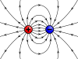

electric_charge

Definition: Electric charge is the physical property of matter that causes matter to experience a force when placed in an electromagnetic field. Electric charge can be positive or negative (commonly carried by protons and electrons respectively, by convention). Like charges repel each other and unlike charges attract each other. An object with an absence of net charge is referred to as neutral. Early knowledge of how charged substances interact is now called classical electrodynamics, and is still accurate for problems that do not require consideration of quantum effects.
Source: Wikipedia
Wikipedia Page (Something wrong with this association? Let us know.)
Wikidata Page (Something wrong with this association? Let us know.)
Occurs in: